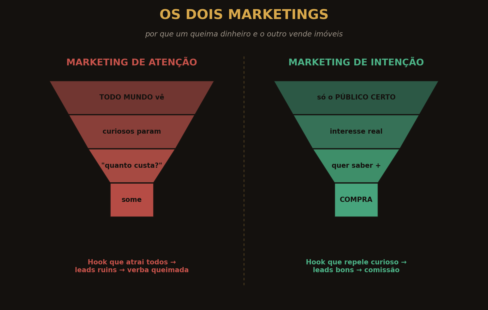
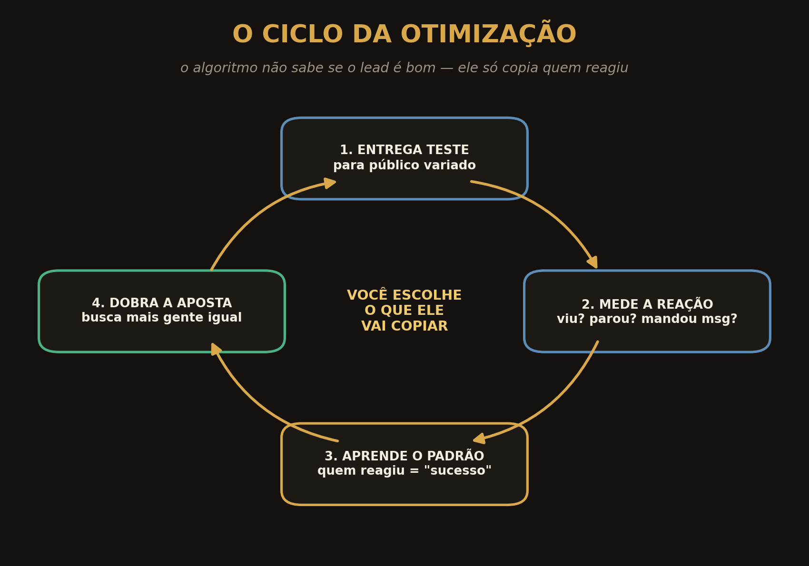
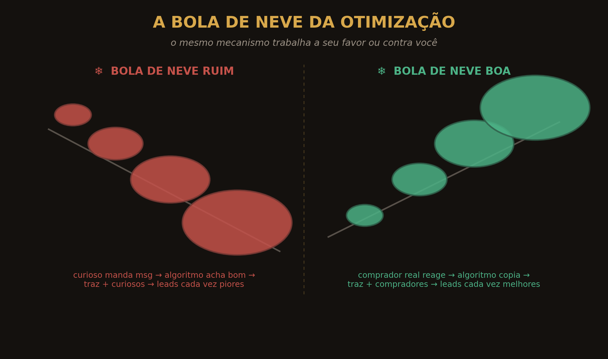
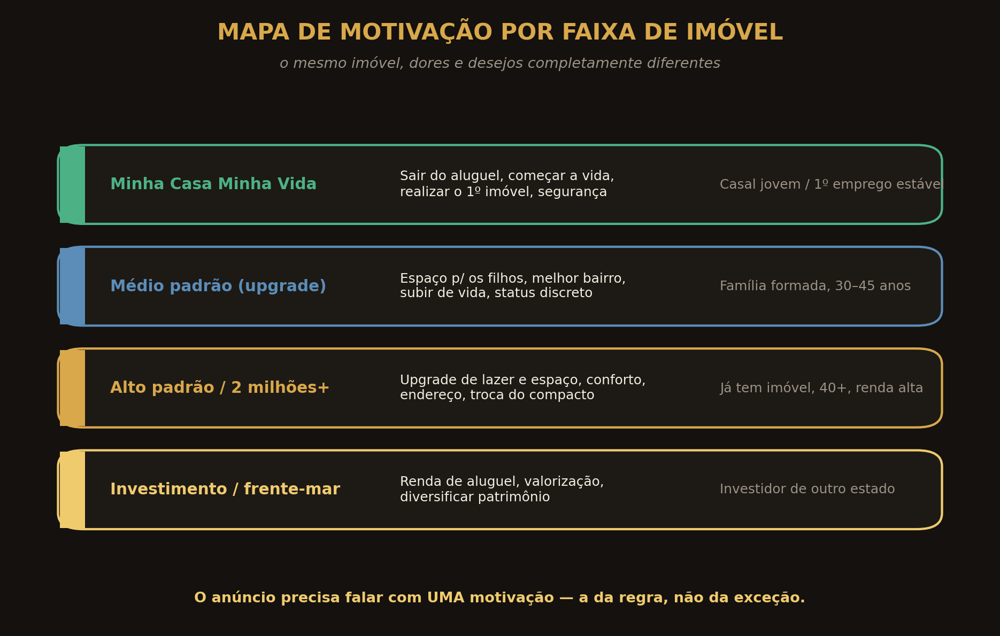
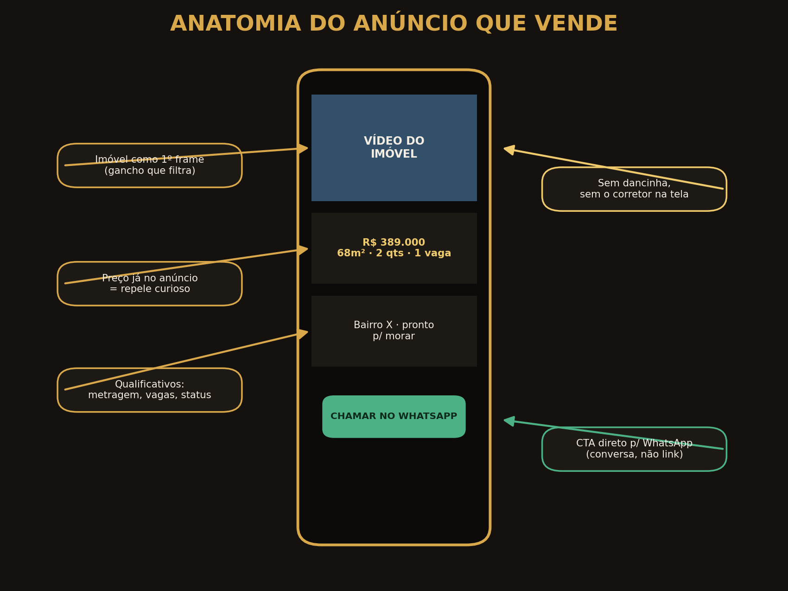
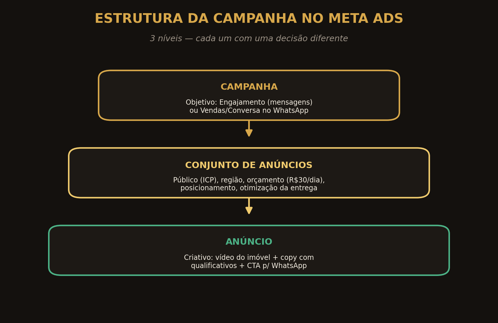
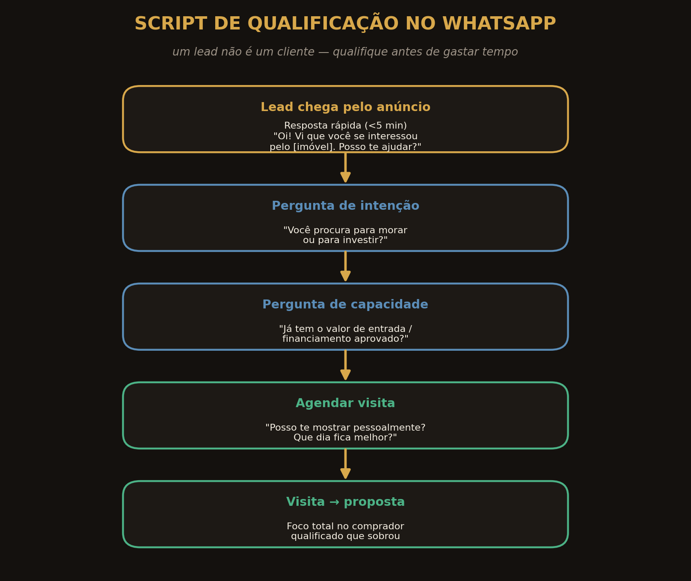
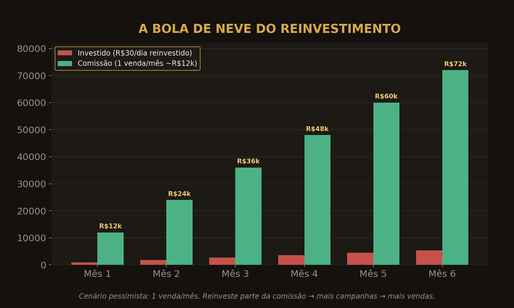
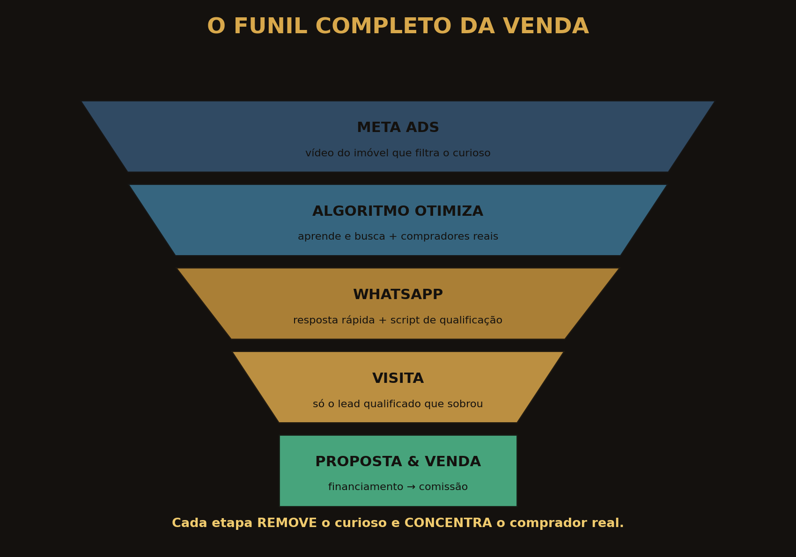

Esta apostila foi escrita como um corretor de altíssimo faturamento ensinaria um pupilo: nada de teoria solta. Cada capítulo é uma peça do mesmo sistema. Leia na ordem.
Antes de qualquer botão, qualquer câmera, qualquer real investido: você precisa entender por que tudo o que te ensinaram sobre “bombar nas redes” está sabotando suas vendas. Esta parte reprograma a forma como você enxerga a internet.
A rede social não é palco. É um mecanismo de distribuição que entrega exatamente aquilo que você pede. O problema é que quase todo corretor pede a coisa errada.
Existe uma cena que se repete em todo o Brasil. Um corretor decide “investir em marketing”. Ele assiste a um guru dizendo que rede social é lugar de entretenimento, que é preciso prender a atenção nos três primeiros segundos, postar todos os dias, mostrar a rotina, gravar o café da manhã, dançar a trend do momento e construir audiência. O corretor então faz exatamente isso — ou se assusta com o volume de trabalho e nem começa. Nos dois casos, o resultado é o mesmo: o telefone até toca, mas quem chega são curiosos. Gente que pergunta o preço e some. Gente que, quando recebe uma mensagem de volta, responde “como você conseguiu meu número?”. Trinta dias depois, o orçamento evaporou e nenhuma chave trocou de mão.
O erro não está no esforço. Está na física da plataforma. Quando você produz conteúdo para entreter, a rede social procura quem está ali para se entreter — pessoas no ônibus, no intervalo do almoço, na cama antes de dormir, querendo se distrair. Não pessoas querendo comprar um apartamento de quatrocentos mil reais. Você pediu atenção; a máquina te entregou, com precisão cirúrgica, quem dá atenção. E quem dá atenção a um corretor, na imensa maioria das vezes, é outro corretor.
Repare nos grandes corretores “famosinhos” do Instagram. Mais cedo ou mais tarde, todos começam a vender curso para outros corretores. Por quê? Porque o público que eles construíram é formado por corretores. Eles viralizaram no feed de quem quer se inspirar — não no feed de quem quer comprar imóvel. O modelo de “viralizar para vender imóvel” é tão ineficiente que até quem consegue viralizar desiste de vender imóvel e passa a vender curso. Essa é a maior evidência de que atenção não é intenção.
Chamamos isso de Marketing de Atenção: você grita para a multidão, a multidão para para olhar, e você confunde olhares com clientes. O oposto — o caminho que realmente vende — é o Marketing de Intenção: em vez de atrair todo mundo, você fala diretamente, e apenas, com quem tem chance real de comprar aquele imóvel específico. O diagrama abaixo mostra os dois funis lado a lado. Guarde essa imagem; ela é a tese inteira desta apostila em uma figura só.

Existe ainda uma armadilha emocional. Como “todo grande corretor do Instagram faz dancinha”, você conclui que precisa fazer igual. Mas você está copiando o sintoma, não a causa. Aqueles vídeos performam para corretores; eles não geram a venda do imóvel — geram a venda do curso. Quando você entende isso, uma liberdade enorme se instala: você não precisa aparecer, não precisa de seguidores, não precisa postar todo dia. Precisa de método.
O algoritmo não é mágico nem maldoso. Ele é um copiador obediente. Quem você ensina ele a copiar é uma escolha sua — e quase ninguém escolhe de propósito.
Pense no algoritmo como um robô que sabe quase tudo sobre cada pessoa que usa a plataforma: o que ela gosta, o que a faz parar de rolar o feed, o que ela ignora. Ao mesmo tempo, ele lê o seu conteúdo para descobrir para quem aquilo deveria ser mostrado. É por isso que, no dia em que você pensa em comprar um tênis, seu feed enche de anúncios de tênis. Não é coincidência nem leitura de pensamento: o robô percebeu uma intenção e entregou exatamente o que combina com ela. Essa mesma inteligência pode trabalhar para vender o seu imóvel — se você souber alimentá-la.
Quando você sobe um anúncio, o algoritmo não sabe, de saída, quem é o público ideal. Então ele faz um teste: mostra para um grupo variado de pessoas e observa quem parou, quem assistiu até o fim, quem mandou mensagem, quem reagiu. Esse processo tem nome — otimização — e é o coração de tudo. Assim que ele identifica um padrão de quem reage, ele dobra a aposta e vai atrás de mais gente parecida.

E aqui está o detalhe que separa quem vende de quem quebra: o algoritmo não sabe se o lead é bom ou ruim. Ele só sabe se a pessoa reagiu. Se um curioso parou e mandou “quanto custa?”, para o robô isso é uma vitória — sinal de que o anúncio “funciona”. Então ele sai procurando mais gente igual àquele curioso. Resultado: os leads vão piorando, mensagem após mensagem, até o seu WhatsApp virar um cemitério de “só estava olhando”.
Cada lead ruim que entra é registrado como sucesso. O algoritmo passa a buscar mais gente parecida com o lead ruim. Os leads pioram, e a campanha desce a ladeira. O mesmo mecanismo, alimentado ao contrário, vira uma avalanche a seu favor: cada comprador real que reage faz o robô buscar mais compradores reais. A escolha de qual bola de neve você cria está inteiramente nas suas mãos.

A pergunta natural é: “entendi o problema, mas como eu faço o contrário?”. A resposta é desconcertantemente simples. Se o algoritmo entrega para quem você pede, peça outra coisa. Em vez de um gancho que atrai todo mundo, crie um gancho que exclui todo mundo que não interessa — e prende apenas quem pode comprar aquele imóvel. Em vez de entreter, informe. É exatamente isso que os três elementos da Parte II fazem, de forma sistemática.
O Marketing de Intenção não é uma tática solta — é uma máquina de três engrenagens. ICP real, imóvel protagonista e elementos qualificativos. Erre uma delas e a máquina inteira trava. Acerte as três e o algoritmo vira seu melhor vendedor.
Noventa por cento dos corretores erram aqui. Eles confundem o perfil de cliente ideal com idade, gênero e bairro. Isso é dado demográfico — e dado demográfico não vende.
ICP é a sigla, em inglês, para Perfil de Cliente Ideal. Mas o coração do ICP não é “homem, 35 a 45 anos, classe B”. O coração do ICP é a motivação de compra: o motivo pelo qual uma pessoa específica pode se interessar por aquele imóvel específico. É a dor que ela quer resolver, o medo que a tira do sono, o desejo que a faz sonhar. Quando você fala com a motivação certa, o anúncio para de competir por atenção e passa a ressoar com intenção.
Veja como o mesmo ato — comprar um imóvel — esconde motivações completamente diferentes. O cliente do Minha Casa Minha Vida quer sair do aluguel e começar a construir a vida; ele compra segurança e independência. O cliente de um apartamento de dois milhões já tem onde morar; ele quer um upgrade — mais espaço, mais lazer, um endereço melhor, conforto para os filhos. São dores opostas. Um anúncio que fala “realize o sonho da casa própria” é perfeito para o primeiro e insultuoso para o segundo. Seu anúncio precisa falar com uma motivação por vez.

No Marketing de Intenção, trabalhamos com a regra, não com a exceção. Um imóvel de dois milhões e meio: quem é mais provável comprar, um homem de quarenta anos estabelecido ou um jovem de vinte e dois? “Mas eu conheço um rapaz de vinte e dois com cinquenta milhões na conta.” Ele é a exceção — não a regra. Se você mira na exceção, gasta dinheiro e energia à toa. Se mira na regra, multiplica suas chances de vender. O dinheiro está na regra.
Na prática, antes de qualquer anúncio, responda por escrito: para este imóvel específico, qual é a motivação dominante de quem compra? O que essa pessoa teme? O que ela deseja sentir ao assinar o contrato? Essas respostas são o briefing do seu vídeo e da sua copy. Sem elas, você está atirando no escuro e pagando a munição.
No mercado imobiliário, o comprador não quer ver você. Ele quer ver o imóvel. O dia em que você entende isso, para de se preocupar em aparecer e começa a vender.
Existe uma diferença crucial entre o mercado imobiliário e quase todos os outros. Em muitos nichos, o vendedor pode ser a estrela. No imóvel, não. O comprador está apaixonado por um espaço, por uma planta, por uma vista — não pelo seu carisma. Quando o corretor se coloca como personagem principal do vídeo, dançando, fazendo gracinha, contando historinha, ele atrai exatamente o público errado: outros corretores que admiram a “produção”. O astro do seu vídeo, do primeiro ao último quadro, deve ser o imóvel.
Isso não é só estética; é qualificação. Se o que capturou a atenção da pessoa foi o próprio imóvel — a metragem, a vista para o mar, a área de lazer — então o lead que chega já vem aquecido pelo produto certo. Ele não te chamou porque te achou simpático; te chamou porque aquele apartamento mexeu com ele. A chance de sair uma venda é incomparavelmente maior.
Há um efeito colateral libertador: filmar o imóvel é mais simples, mais rápido e mais barato do que se transformar em influenciador. Você não precisa de roteiro decorado, não precisa de carisma de palco, não precisa de equipe. Precisa mostrar bem o produto — boa luz, sequência lógica dos ambientes, e os números que importam aparecendo na tela. Menos ego, mais venda.
O primeiro quadro do vídeo já deve ser o imóvel — nunca o seu rosto. Os primeiros segundos não servem para “prender todo mundo”; servem para identificar o comprador certo. Mostrar logo a vista, a sala, a fachada ou a planta funciona como um crachá: quem se interessa, fica; quem não é o público, sai. E sair é ótimo — é o algoritmo aprendendo quem evitar.
É o que separa um Instagram que gera vendas de um Instagram que só gera engajamento e curiosos. Você vai, literalmente, expulsar gente do seu conteúdo — de propósito.
Elementos qualificativos são as informações que deixam explícito para quem é aquele imóvel. Preço. Metragem. Número de quartos e vagas. Condição de pagamento. Bairro. Status (na planta, em construção, pronto para morar). Nada nas entrelinhas, nada ambíguo. Quando você coloca o preço logo no anúncio, está fazendo um ato aparentemente contraintuitivo: está repelindo quem não pode ou não quer pagar aquele valor. E é justamente isso que faz o método funcionar.
Lembre da física do algoritmo. Quando o curioso vê o preço e vai embora sem interagir, o robô registra: “esta pessoa não é para este conteúdo”. Ele passa a afastar perfis parecidos com o curioso. Ao mesmo tempo, quem tem interesse real fica, interage, manda mensagem — e o robô passa a buscar mais gente como essa. Você está, simultaneamente, otimizando a máquina para expulsar o errado e atrair o certo. Os elementos qualificativos são o gatilho desse duplo movimento.
“Não coloque o preço para a pessoa ter que perguntar.” Esse conselho enche seu WhatsApp de gente perguntando preço e sumindo — e ensina o algoritmo que curiosos são seu público. O preço visível não afasta o comprador real; ele afasta o curioso. O comprador certo quer o preço. É a primeira coisa que ele procura.
Na prática, todo anúncio deve carregar, de forma clara e cedo: o valor, a metragem, a configuração (quartos/vagas), a condição (financiável, entrada, etc.) e a localização. Quanto mais específico, mais afiado é o filtro — e mais qualificado é o lead que sobra do outro lado.
Teoria sem execução é só entretenimento caro. Nesta parte você sai do conceito e entra na conta de anúncios: como montar o criativo, escrever o gancho, configurar a campanha no Meta Ads e atender no WhatsApp de um jeito que transforma clique em visita e visita em proposta.
Um bom anúncio imobiliário não é bonito — é cirúrgico. Cada elemento tem uma função: ou atrai o comprador certo, ou repele o curioso. Nada é decorativo.
O anúncio que vende segue uma estrutura quase invariável. Ele abre com o imóvel em foco (o gancho que filtra), traz os números que qualificam logo nos primeiros segundos, descreve a condição e a localização de forma objetiva, e termina com uma chamada direta para a conversa no WhatsApp — não para um link genérico, porque um link é diferente de um cliente. A figura abaixo disseca essa anatomia peça por peça.

O gancho (a abertura do vídeo) é o ponto mais mal compreendido do marketing imobiliário. O guru ensina a “prender a atenção de todo mundo nos três primeiros segundos”. Você vai fazer o contrário: criar uma abertura que afasta quem não interessa e fisga apenas quem pode comprar aquele imóvel. Um bom gancho de intenção menciona, logo de cara, um elemento qualificativo forte — o preço, o bairro, a faixa, a condição — para que o curioso role o feed e o comprador pare.
Adapte cada um ao seu imóvel. Note como quase todos começam por um filtro (preço, perfil, região, condição):
Você não precisa de cinco ou dez formatos de criativo. Precisa de três que funcionam — e de disciplina para repeti-los, imóvel após imóvel.
Quem vende com consistência não vive inventando formato novo. Pelo contrário: domina um punhado de estruturas e as replica. A seguir, os três formatos de anúncio que sustentam a maioria das vendas no método. Todos respeitam os três elementos: imóvel protagonista, qualificativos visíveis e gancho que filtra.
Uma caminhada filmada pelo imóvel, na ordem em que alguém o visitaria: entrada, sala, cozinha, quartos, varanda, vista. Sem você na frente da câmera. Texto na tela com preço, metragem e condição logo nos primeiros segundos. É o formato mais versátil e o que melhor qualifica, porque o comprador “visita” o imóvel antes de te chamar. Narração opcional e objetiva, focada em fatos (“suíte com closet”, “cozinha com armários planejados”), nunca em adjetivos vazios.
Anúncio curto e direto cujo herói é a condição comercial: um preço abaixo do metro quadrado da região, uma entrada facilitada, um financiamento direto, uma última unidade. Abre com o número (“R$ X — abaixo da tabela do bairro”) e mostra rapidamente o imóvel para sustentar a oferta. Excelente para gerar urgência genuína em quem já está no mercado de compra.
Aqui o gancho é a motivação, não o imóvel em si. “Para quem vai sair do aluguel”, “para a família que precisa de um quarto a mais”, “para o investidor que quer renda de temporada”. O vídeo conecta um recurso do imóvel à dor do ICP. É o formato mais poderoso quando você já conhece bem a motivação dominante daquele público (Capítulo 3).
Fixe esses três formatos por pelo menos seis meses. Troque o imóvel, troque o gancho, mantenha a estrutura. Variedade excessiva confunde sua leitura de resultado; repetição com pequenas variações te dá dados claros sobre o que funciona.
Você não precisa ser especialista em tecnologia. Precisa entender três níveis e tomar uma decisão certa em cada um deles.
Toda campanha no Meta Ads (Facebook e Instagram) tem três camadas. Confundi-las é a origem da maioria dos desperdícios. Na Campanha, você escolhe o objetivo. No Conjunto de Anúncios, você define público, região e orçamento. No Anúncio, você coloca o criativo e a copy. Cada nível, uma decisão.

Para o método, o objetivo certo é gerar conversa: Engajamento → mensagens ou Vendas → conversas no WhatsApp. Você quer que o algoritmo otimize para pessoas propensas a mandar mensagem, não a curtir ou comentar. Fuja de objetivos de “alcance” ou “reconhecimento de marca” — eles te entregam audiência, não compradores.
Aqui você traduz o ICP em configuração. Defina a região com critério: o raio em torno do imóvel para quem busca morar perto; o estado ou país inteiro para imóveis de investimento e frente-mar, que atraem compradores de fora. Comece com orçamento enxuto e constante — R$ 30 por dia é suficiente para o algoritmo aprender. Deixe a segmentação detalhada relativamente ampla: o método ensina o algoritmo a achar o público pelo criativo qualificador, não por interesses manuais. O filtro está no anúncio, não na segmentação.
É onde entram o vídeo do imóvel (Capítulo 4), o gancho que filtra (Capítulo 6) e os qualificativos (Capítulo 5). A copy repete e reforça os números do vídeo e termina com a chamada para o WhatsApp. Use a configuração de “clique para o WhatsApp” para que a conversa comece com contexto.
Não julgue a campanha por curtidas. Julgue por conversas qualificadas que viram visita. Dê ao algoritmo alguns dias para sair da fase de aprendizado antes de mexer. Mexer demais reinicia o aprendizado e queima orçamento. Constância vence ansiedade.
O anúncio entrega a conversa. A venda acontece no WhatsApp. Um link é diferente de um cliente — e um lead só vira cliente se você qualificar bem e rápido.
Dois erros matam o atendimento: a lentidão e a falta de qualificação. Responder horas depois mata o calor do lead; tratar todo lead igual desperdiça seu tempo com quem nunca vai comprar. O script a seguir resolve os dois. Ele é rápido na resposta e cirúrgico na qualificação — descobrindo, em poucas mensagens, se a pessoa tem intenção e capacidade.

Você (em até 5 min): “Oi, [nome]! Vi que você se interessou pelo [imóvel/condição]. Ele tem [metragem], [quartos] e está [condição]. Posso te tirar todas as dúvidas por aqui?”
Lead: “Oi, queria saber mais.”
Você (intenção): “Show. Você está procurando para morar ou para investir? Assim eu te mostro o que faz mais sentido.”
Você (capacidade): “Perfeito. E como você pretende fazer a compra — financiamento ou à vista? Se for financiamento, você já tem aprovação ou quer que eu te oriente?”
Você (agendar): “Esse imóvel costuma sair rápido. Posso te mostrar pessoalmente? Você prefere amanhã à tarde ou sábado de manhã?”
Repare na engenharia: a pergunta “morar ou investir?” revela a motivação (e te diz qual discurso usar). A pergunta sobre financiamento revela a capacidade — e, gentilmente, dispensa quem não tem condição naquele momento. E a oferta de dois horários fechados (“amanhã à tarde ou sábado de manhã”) facilita o sim. Você não pergunta se a pessoa quer visitar; pergunta quando.
Lead de tráfego pago esfria em minutos. Quem responde primeiro, na prática, atende primeiro. Tenha as primeiras mensagens prontas (atalhos/respostas rápidas) e priorize velocidade. Um lead respondido em 5 minutos vale muito mais do que três leads respondidos no dia seguinte.
Uma venda pode ser sorte. Um sistema é o que transforma sorte em previsibilidade. Nesta parte você aprende a transformar comissão em combustível, a operar com checklist e a evitar os erros que fazem a maioria desistir antes da bola de neve girar.
R$ 16 investidos viraram R$ 12 mil de comissão. Esse não é o fim da história — é o começo de um sistema que se autoalimenta.
Vamos fazer a conta no pessimismo, para tirar a sorte da equação. Em vez de R$ 16, suponha que você invista R$ 30 por dia — R$ 900 no mês. Suponha que isso gere uma única venda de um imóvel de quatrocentos mil, com comissão de R$ 12 mil. Você conhece algum investimento que transforme R$ 900 em R$ 12 mil em trinta dias? Esse é o ponto de partida, não o teto.
Agora vem o mecanismo da escala. Dos R$ 12 mil que entraram, você separa dois ou três mil para reinvestir em anúncios no mês seguinte. Mais verba bem aplicada significa mais campanhas, mais leads qualificados, mais visitas — e, muito provavelmente, mais de uma venda. Você vende, reinveste, vende, reinveste. É a bola de neve da otimização (Capítulo 2) operando agora no seu caixa, não só no algoritmo.

Cada campanha que roda também treina o seu algoritmo e amadurece sua leitura de criativo, gancho e público. Com o tempo, seu custo por lead qualificado cai e sua taxa de conversão sobe. Você não está só comprando vendas — está construindo uma máquina que fica melhor a cada mês.
Tudo o que você leu até aqui é um único funil. Cada etapa tem uma só missão: remover o curioso e concentrar o comprador real.
Visto de cima, o método é uma linha reta com cinco estações. O anúncio filtra; o algoritmo otimiza; o WhatsApp qualifica; a visita aproxima; a proposta fecha. A elegância está em que cada etapa reforça a anterior: um anúncio bem qualificado facilita o atendimento, que facilita a visita, que facilita a proposta. Erros lá no topo (gancho que atrai todo mundo) contaminam tudo o que vem depois.

Antes de subir qualquer campanha, passe por esta lista. Ela existe para você nunca esquecer um detalhe e nunca queimar verba por descuido.
A maioria dos corretores não fracassa por falta de método — fracassa por repetir, sem perceber, um destes sete erros. Conheça-os para nunca cometê-los.
| O erro | O que fazer no lugar |
|---|---|
| 1. Produzir para entreter | Produza para informar. O objetivo do vídeo é qualificar, não viralizar. |
| 2. Aparecer no lugar do imóvel | Tire-se da tela. O astro é o imóvel; o primeiro quadro é dele. |
| 3. Esconder o preço | Mostre o preço e os qualificativos cedo. Eles repelem o curioso e atraem o comprador. |
| 4. Mirar na exceção | Trabalhe com a regra. Defina a motivação dominante e fale com ela. |
| 5. Otimizar para o objetivo errado | Use objetivo de mensagens/conversas, nunca alcance ou curtidas. |
| 6. Atender devagar e sem filtro | Responda em até 5 min e qualifique intenção + capacidade antes da visita. |
| 7. Mexer na campanha o tempo todo | Dê tempo ao aprendizado. Constância e reinvestimento > ansiedade. |
“Preciso ter seguidores?” Não. O método funciona com tráfego pago e qualificação; seguidores são irrelevantes para a venda do imóvel.
“Preciso aparecer / saber editar vídeo?” Não. Você precisa mostrar bem o imóvel. Câmera de celular, boa luz e os números na tela bastam.
“R$ 30 por dia é pouco?” É suficiente para começar e para o algoritmo aprender. A escala vem do reinvestimento, não de um orçamento gigante no dia um.
“E se eu moro no interior?” O método funciona em capital e interior. Muda a região e, às vezes, a motivação — não o sistema.
“Quanto tempo até a primeira venda?” Com o criativo certo e atendimento rápido, é possível ter campanha rodando e leads qualificados chegando em poucos dias. A venda depende do seu fechamento — mas o funil entrega a oportunidade.
Pare de pedir atenção e comece a pedir intenção: mostre o imóvel certo, com a informação certa, para a pessoa certa — e deixe o algoritmo fazer o trabalho pesado de encontrar mais gente como ela. O curioso vai embora; o comprador fica. É assim que R$ 30 por dia viram comissões que mudam o seu ano.
— Fim da apostila —
Material didático de engenharia reversa do método “Marketing de Intenção” aplicado à venda de imóveis.
Imagens fotográficas sob licenças Creative Commons (Openverse). Infográficos de produção própria.